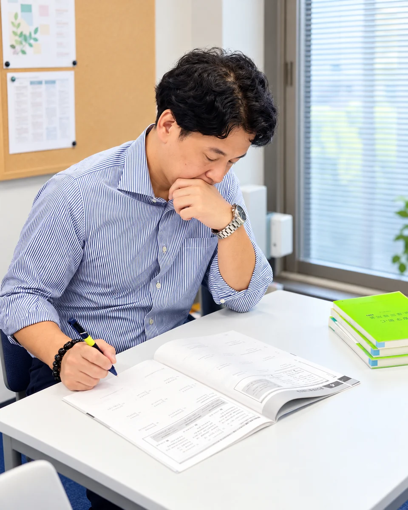

① 準備はどうだった？
- テスト範囲を確認していましたか？
- 必要な教材を把握していましたか？
- テストまでの日数を考えて勉強を始めましたか？
テスト直前に慌ててしまった場合は、勉強の始め方や準備を見直す余地があるかもしれません。

テストが返ってきたとき、最初に確認するのは点数ではないでしょうか。
もちろん、点数も大切です。
でも、次のテストに向けて考えたいのは、結果だけではありません。
今回のテスト勉強で何が良かったのか。そして、次に何を改善すればいいのか。
そこまで振り返ることで、次の勉強で取り組むことを整理できます。
23問のステップアップ診断
テスト直前に慌ててしまった場合は、勉強の始め方や準備を見直す余地があるかもしれません。
勉強時間だけでなく、その時間に何をしていたのかも確認してみましょう。
答えを見て理解できたことと、自分の力で解けることは分けて考える必要があります。
テスト勉強の振り返りは、反省点を探すためだけのものではありません。
今回できていたことを見つけるのも大切です。
例えば、早めに準備を始められたことや、苦手な問題を繰り返し解けたこと。
そうした行動は、次のテストでも続ける候補になります。
全部を変える必要はありません。良かった部分は続け、改善する部分を決めましょう。
23問に答えることで、今回の勉強を振り返ります。
診断結果では、次の内容を確認できます。
結果を見たら、まずは一つ、次回に実行することを決めてみましょう。
テストが終わった今だからこそ、今回の勉強を振り返ることができます。
次のテストまでに何を変えるか、一緒に考えてみませんか？
23問・無料
診断結果について詳しく相談したい方は、REVIAの無料相談もご利用いただけます。
オンライン家庭教師REVIA
正しい努力で、未来を変える。